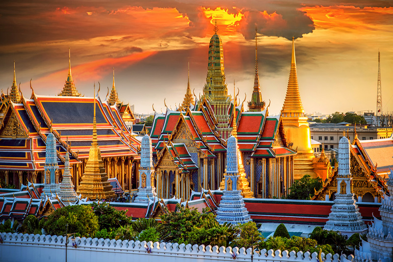

สถานที่ท่องเที่ยวในกรุงเทพฯ
หน้าหลัก
ประเพณี
อาหารท้องถิ่น
ที่พัก
ข้อมูลผู้จัดทำ
สถานที่ท่องเที่ยว 3 แห่งในกรุงเทพฯ
 วัดพระแก้ว (Wat Phra Kaew) - วัดที่สำคัญที่สุดในประเทศไทย
ตลาดน้ำดำเนินสะดวก (Damnoen Saduak) - ตลาดน้ำที่มีชื่อเสียง
สวนหลวง ร.9 (King Rama IX Park) - สวนสาธารณะที่ใหญ่และสวยงาม